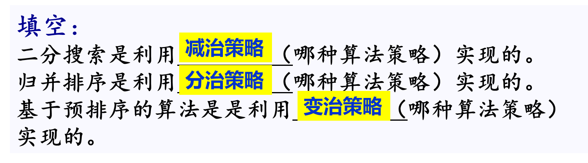
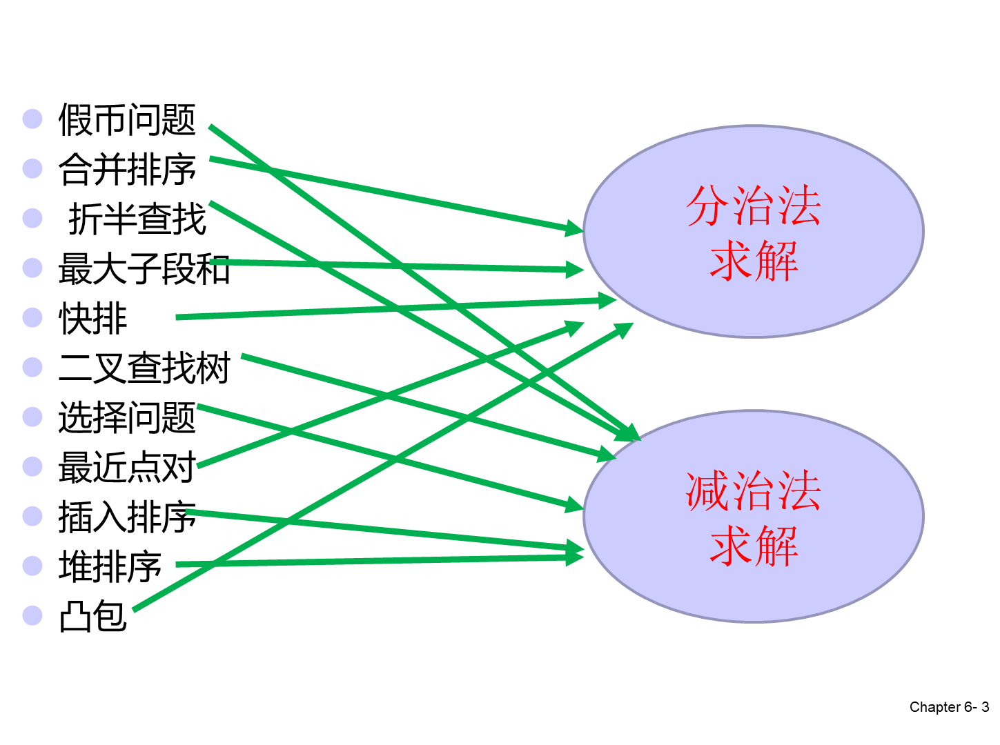

证明方法反证法数学归纳法【证明为误】反例证明课程笔记Chapter1 ComplexcityChpater3 Recursive Algorithms 递归Chapter4 Divide-Conquer Algorithm 分治Chapter5 Decrease-and-Conquer 减治Chapter6 Transform and Conquer 变治Chapter7 Greedy Algorithms贪心算法Chapter8 DP 动规Chapter9 Graph分支限界法Chapter 11 The Theory of NP-Completeness图论流问题 着色问题 算法分析与设计2022-总复习.ppt划重点课程资源中南大学2020算法分析与设计试卷带答案(1).pdf1、基础算法必练题（含解法））.pdf刷题.pdf解题报告模板.doc